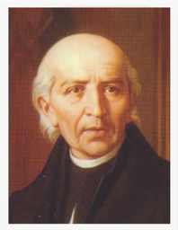
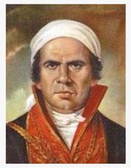
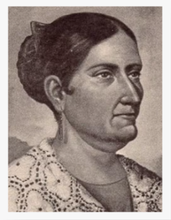
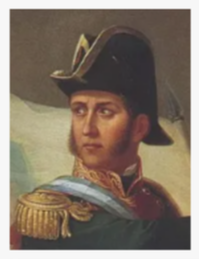
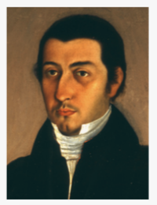
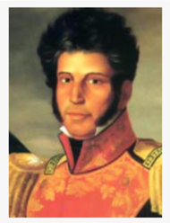
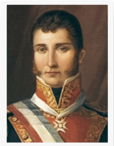
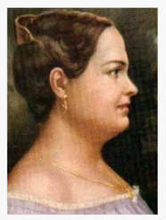

Personajes
importantes
importantes

Miguel Hidalgo y Costilla nació en 1753 en Guanajuato. Fue sacerdote, maestro y uno de los principales líderes de la Independencia de México. El 16 de septiembre de 1810 realizó el llamado Grito de Dolores, con el que inició el movimiento de Independencia. Durante la lucha impulsó medidas para mejorar las condiciones de indígenas y mestizos, como la abolición de la esclavitud y de algunos tributos. Fue capturado en 1811 y ejecutado el 30 de julio de 1811. Después de su muerte, fue reconocido como Padre de la Patria y el 16 de septiembre se convirtió en el Día de la Independencia.

José María Morelos y Pavón nació en 1765 en Valladolid, actual Morelia. Fue sacerdote, político y militar, y se convirtió en uno de los principales líderes de la Independencia de México después de la muerte de Miguel Hidalgo. Dirigió varias campañas militares y logró importantes victorias, especialmente en el sur del país. En 1813 convocó el Congreso de Chilpancingo, donde presentó sus ideas sobre la independencia, la igualdad y la organización de un nuevo gobierno. Fue capturado en 1815 y ejecutado el 22 de diciembre de ese mismo año.

Josefa Ortiz de Domínguez nació en 1768 en Valladolid, hoy Morelia. Fue una patriota y heroína de la Independencia de México, conocida como “La Corregidora de Querétaro”. Participó en la Conspiración de Querétaro junto con otros personajes que buscaban iniciar un levantamiento contra el gobierno virreinal. Cuando descubrió que la conspiración había sido descubierta, logró enviar un aviso a Miguel Hidalgo y otros insurgentes, lo que permitió adelantar el inicio de la lucha de Independencia. Fue arrestada y permaneció varios años recluida. Después de ser liberada, rechazó reconocimientos y recompensas por su participación. Murió en 1829 en Ciudad de México.

Ignacio Allende nació en 1769 en San Miguel el Grande, Guanajuato. Fue un militar independentista y uno de los principales protagonistas de la primera etapa de la Independencia de México. Participó en la Conspiración de Querétaro y apoyó a Miguel Hidalgo en el inicio del movimiento en 1810. Allende prefería una estrategia militar y llegó a proponer ocupar la Ciudad de México. Después de varias derrotas, fue capturado junto con Hidalgo en Acatita de Baján, Coahuila, en 1811. Fue juzgado y fusilado ese mismo año, junto con Ignacio Aldama y Mariano Jiménez. Sus restos descansan en la Columna de la Independencia en Ciudad de México.

Juan Aldama nació alrededor de 1769 en San Miguel el Grande, Guanajuato. Fue un patriota mexicano y militar que participó en las conspiraciones de Valladolid y Querétaro. Apoyó el levantamiento dirigido por Miguel Hidalgo y asumió un importante papel militar durante el inicio de la Independencia de México, participando en batallas como Monte de las Cruces y el asalto de Guanajuato. Después de varias derrotas, se retiró hacia el norte, pero fue capturado en Acatita de Baján junto con otros líderes insurgentes. Fue acusado de traición y fusilado en Chihuahua el 26 de junio de 1811.

Vicente Guerrero nació en 1782 en Tixtla. Fue militar y político mexicano y uno de los principales líderes de la Independencia de México. Se unió al movimiento independentista y, después de la captura y ejecución de José María Morelos en 1815, continuó luchando por la independencia, incluso cuando el movimiento parecía estar perdido. En 1821, apoyó a Agustín de Iturbide en el Plan de Iguala, que contribuyó a lograr la independencia de México. Más tarde fue presidente de México en 1829, destacando por decretar la abolición de la esclavitud. Fue derrocado ese mismo año y posteriormente capturado y fusilado en Cuilapan el 14 de febrero de 1831.

Agustín de Iturbide nació en 1783 en Valladolid, actual Morelia. Fue un militar mexicano y una figura importante en la consumación de la Independencia de México. Al principio combatió contra los insurgentes, pero en 1821 se unió a Vicente Guerrero y juntos impulsaron el Plan de Iguala, que establecía la independencia de México. Al frente del Ejército Trigarante, logró entrar a la Ciudad de México el 27 de septiembre de 1821, marcando la consumación de la Independencia. En 1822 fue proclamado emperador de México con el nombre de Agustín I, pero tuvo que abdicar en 1823. Regresó a México en 1824, fue detenido y fusilado ese mismo año.

Leona Vicario nació en 1789 en Ciudad de México. Fue una heroína de la Independencia de México y apoyó la causa insurgente enviando dinero, medicinas, noticias e información a los rebeldes. También ayudó a fugitivos y colaboró con los insurgentes a pesar de los riesgos. En 1813 fue capturada y encarcelada, pero logró escapar y continuó apoyando el movimiento independentista. Después de consumarse la Independencia, recibió una compensación por los bienes que había perdido. Murió en 1842 en Ciudad de México y sus restos se encuentran en la Columna de la Independencia.